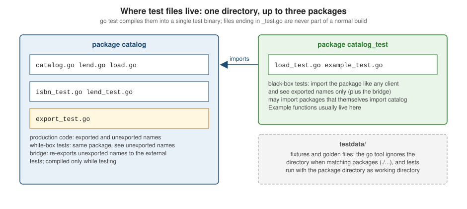

Testing
|
This content was generated with the assistance of AI and should be verified against the official documentation before being relied on in production. |
This page is written against Go 1.27 (go1.27.2), checked on 2026-10-18. Go ships its testing story in the standard
library and the go command: there is no test framework to install, no annotations, and no assertion DSL. A test is
an ordinary function in a file whose name ends in _test.go, go test finds it, builds a test binary, runs it and
reports. Everything else on this page — subtests, helpers, fixtures, HTTP servers, coverage, integration binaries — is a layer of conventions and small helpers on top of that one mechanism. Every example below was compiled, vetted
and run for real against the shelf module (example.com/shelf) used throughout this Go section; the module
declares go 1.27.
Benchmarks (BenchmarkXxx, b.Loop), fuzzing (FuzzXxx) and testing/synctest have their own page,
Benchmarks, Fuzzing and synctest; this page
covers tests, examples, test support packages and coverage. For the same topic in another language see the Rust
Reference’s Testing & Benchmarking, and for end-to-end
tests of a finished command-line program see Testing CLIs.
The shape of a Go test
A package under test is an ordinary directory of .go files. Next to the production files you add files named
*_test.go. The go command treats them specially:
-
they are excluded from
go buildandgo install, so test code never reaches a production binary; -
they are compiled into a separate test binary together with the package, by
go test; -
they may declare
TestXxx(t *testing.T)functions,BenchmarkXxx(b *testing.B),FuzzXxx(f *testing.F)andExampleXxx()functions, plus an optionalTestMain(m *testing.M); -
the part after
Testmust not start with a lowercase letter, soTestParseandTest_parseare tests whileTestparseis not.go vet(itstestsanalyzer) reports malformed names and signatures.
The testing package defines the types every test uses: testing.T for tests, testing.B for benchmarks, testing.F
for fuzz targets and testing.M for TestMain. testing.TB is the interface their common methods satisfy; helpers
that must work in tests, benchmarks and fuzz targets accept a testing.TB.
Source: testing: Package testing
Same package or _test package
A test file declares one of two package names, and a single directory can hold both kinds at once:
-
Same package (
package catalog): a white-box test. It sees unexported identifiers, which is convenient for testing internals and for tests of helpers. -
External test package (
package catalog_test): a black-box test. It must import the package like any client, so it can only use the exported API. It may import packages that themselves import the package under test, which a same-package test cannot do without creating an import cycle. Testable examples normally live here, because they double as documentation for users.

When a black-box test needs one unexported name, the idiom is a file called export_test.go in the same package
that re-exports it. Because the file ends in _test.go, the bridge exists only while testing and adds nothing to the
public API. The following scratch module (example.com/bridge) has one unexported checksum function:
package bridge
// Valid reports whether the digits carry a correct checksum.
func Valid(digits string) bool { return checksum(digits)%10 == 0 }
func checksum(digits string) int {
sum := 0
for i, r := range digits {
w := 1
if i%2 == 1 {
w = 3
}
sum += int(r-'0') * w
}
return sum
}Source: cmd/go: Test packages
package bridge
// Checksum exposes the unexported checksum to the external test package.
var Checksum = checksumSource: cmd/go: Test packages
package bridge_test
import (
"testing"
"example.com/bridge"
)
func TestChecksum(t *testing.T) {
if got := bridge.Checksum("9780134190440"); got != 80 {
t.Errorf("Checksum = %d, want 80", got)
}
if !bridge.Valid("9780134190440") {
t.Error("Valid = false")
}
}$ go test -v .
=== RUN TestChecksum
--- PASS: TestChecksum (0.00s)
PASS
ok example.com/bridge 0.170s
$ go list -f '{{.GoFiles}} {{.TestGoFiles}} {{.XTestGoFiles}}' .
[check.go] [export_test.go] [check_test.go]go list shows the three groups: production files, same-package test files (export_test.go among them) and
external test files. testdata directories, and directories whose names begin with . or _, are ignored when the
go command expands patterns such as ./..., so they are the right place for fixtures
(see testdata and golden files).
Source: cmd/go: Test packages
A first test
Here is the first test of the shelf module’s ISBN parser, using only t.Fatalf and t.Errorf:
func TestParseISBN(t *testing.T) {
got, err := ParseISBN("978-0-13-419044-0")
if err != nil {
t.Fatalf("ParseISBN(valid) error = %v", err)
}
if want := ISBN("9780134190440"); got != want {
t.Errorf("ParseISBN(valid) = %q, want %q", got, want)
}
}Run it verbosely, restricting to this test:
$ go test -v -run 'TestParseISBN$' ./catalog
=== RUN TestParseISBN
--- PASS: TestParseISBN (0.00s)
PASS
ok example.com/shelf/catalog 0.173sSource: testing: Main
Reporting: Error, Fatal, Log, Skip
Go has no assertions. A test reports problems with methods on *testing.T:
| Method | Effect |
|---|---|
|
Record a line, shown for failing tests and always with |
|
|
|
|
|
Mark failed without logging; |
|
Reports whether the test has failed so far — useful in a cleanup that dumps diagnostics only on failure. |
|
|
|
The full test name including parent names, for example |
The rule of thumb is to use Fatal where continuing would be meaningless or would panic (the parse failed, so there is
no value to compare) and Error everywhere else, so a failing run shows as much as possible. Fatal, FailNow and
Skip must be called from the goroutine running the test; Error and Log may be called from any goroutine.
go vet reports Fatal called from another goroutine (the testinggoroutine analyzer, shown
below).
The scratch module example.com/fail shows all outcomes at once:
package fail
import "testing"
func assertDouble(t *testing.T, in, want int) {
t.Helper()
if got := Double(in); got != want {
t.Errorf("Double(%d) = %d, want %d", in, got, want)
}
}
func TestErrorContinues(t *testing.T) {
assertDouble(t, 2, 5)
assertDouble(t, 3, 7)
t.Log("still running after Errorf")
}
func TestFatalStops(t *testing.T) {
if got := Double(2); got != 5 {
t.Fatalf("Double(2) = %d, want 5", got)
}
t.Log("never reached")
}
func TestSkipped(t *testing.T) {
t.Skip("needs a database")
}
func TestPanics(t *testing.T) {
var m map[string]int
m["x"] = 1
}--- FAIL: TestErrorContinues (0.00s)
fail_test.go:13: Double(2) = 4, want 5
fail_test.go:14: Double(3) = 6, want 7
fail_test.go:15: still running after Errorf
--- FAIL: TestFatalStops (0.00s)
fail_test.go:20: Double(2) = 4, want 5
--- FAIL: TestPanics (0.00s)
panic: assignment to entry in nil map [recovered, repanicked]
goroutine 38 [running]:
testing.tRunner.func1.2({0x101132840, 0x10116cf30})
.../src/testing/testing.go:2125 +0x1a0
...
example.com/fail.TestPanics(0x4814c2fd8908?)
.../fail/fail_test.go:31 +0x34
...
FAIL example.com/fail 0.188s
FAILThe stack trace is shortened here. Note four facts the output shows. TestErrorContinues kept going after the first
Errorf and logged both mismatches. TestFatalStops never printed "never reached". The skipped test is silent
without -v. And a panic in a test aborts the whole test binary (the remaining tests do not run), after printing
the stack and the test that panicked; go test exits with status 1.
Source: testing: type T
Useful failure messages
The Go code review guidance asks that a failure message state what was called, what came back and what was expected — conventionally in the form Fn(input) = got, want want — without needing the test source to interpret it. Prefer
%q for strings (it exposes stray spaces and newlines) and %v or %+v for values, and say which input failed when
a loop or table is involved.
// Fragment. Good: self-contained
t.Errorf("Double(%d) = %d, want %d", in, got, want)
// Poor: the reader must open the test to know what was compared
t.Errorf("wrong result: %d", got)Report got before want (the official guidance), name the function under test, and compare whole values with one
check where possible so the message prints both complete values.
Helper functions and t.Helper
A helper that calls t.Fatalf or t.Errorf would report the helper’s own line, not the line of the test that called
it. Calling t.Helper() as the first statement marks the function as a helper, and the failure is attributed to the
caller. The shelf test below builds a populated store; if the fixture is wrong, the report points at the test that
asked for it:
package catalog
import "testing"
// newStore returns a MemStore holding one book per ISBN text.
func newStore(t *testing.T, isbns ...string) *MemStore {
t.Helper()
s := NewMemStore()
for _, text := range isbns {
isbn, err := ParseISBN(text)
if err != nil {
t.Fatalf("newStore: %v", err)
}
s.Put(Book{ISBN: isbn, Title: "Book " + text})
}
return s
}The earlier example.com/fail listing used the same idea: assertDouble calls t.Helper(), and the failures above are
reported at lines 13 and 14, where the test called it, not at the t.Errorf inside the helper. Helpers accept a
testing.TB when they must also work in benchmarks. A helper taking *testing.T that registers cleanups with t.Cleanup
lets the caller forget about teardown altogether.
Source: testing: T.Helper
Table-driven tests and subtests
Most Go tests are table-driven: a slice of anonymous structs holds the cases (inputs, expected values, an expected
error) and one loop runs them. Adding a case is a one-line change, and the test logic is written once. Since Go 1.7 each
case runs as a subtest through t.Run(name, func(t *testing.T)), which gives every case its own name, its own failure
status and the ability to select it from the command line.
package catalog
import (
"errors"
"testing"
)
func TestParseISBN(t *testing.T) {
got, err := ParseISBN("978-0-13-419044-0")
if err != nil {
t.Fatalf("ParseISBN(valid) error = %v", err)
}
if want := ISBN("9780134190440"); got != want {
t.Errorf("ParseISBN(valid) = %q, want %q", got, want)
}
}
func TestParseISBNTable(t *testing.T) {
tests := []struct {
name string
in string
want ISBN
wantErr error
}{
{name: "hyphenated", in: "978-0-13-419044-0", want: "9780134190440"},
{name: "plain", in: "9781492077213", want: "9781492077213"},
{name: "bad checksum", in: "9780134190441", wantErr: ErrInvalidISBN},
{name: "too short", in: "978013", wantErr: ErrInvalidISBN},
{name: "letters", in: "97801341904X0", wantErr: ErrInvalidISBN},
}
for _, tt := range tests {
t.Run(tt.name, func(t *testing.T) {
got, err := ParseISBN(tt.in)
if !errors.Is(err, tt.wantErr) {
t.Fatalf("ParseISBN(%q) error = %v, want %v", tt.in, err, tt.wantErr)
}
if got != tt.want {
t.Errorf("ParseISBN(%q) = %q, want %q", tt.in, got, tt.want)
}
})
}
}$ go test -v -run 'TestParseISBNTable/(plain|too)' ./catalog
=== RUN TestParseISBNTable
=== RUN TestParseISBNTable/plain
=== RUN TestParseISBNTable/too_short
--- PASS: TestParseISBNTable (0.00s)
--- PASS: TestParseISBNTable/plain (0.00s)
--- PASS: TestParseISBNTable/too_short (0.00s)
PASS
ok example.com/shelf/catalog 0.067sPoints worth knowing about the loop:
-
The check
errors.Is(err, tt.wantErr)handles both success (wantErrisnil, so onlynilmatches) and the failure kinds; see Error Handling forerrors.Isand wrapping. -
Since Go 1.22 each iteration of the
forloop has its ownttvariable (for modules that declarego 1.22or later), so a closure or a parallel subtest captures the case it was created for. Older code that you may meet writestt := ttas the first line of the loop body to get the same effect; that copy is no longer needed (thecopyloopvaranalyzer reports it). See Control Flow for the language change. -
A table can be a map keyed by name instead of a slice with a
namefield. Map iteration order is random, which also shakes out tests that accidentally depend on order. -
Keep tables readable: use named fields (
want,wantErr), not positional struct literals, and a short descriptive name per case — the name is the handle you use with-run.
Source: Go Wiki: Table Driven Tests
Selecting subtests: -run, -skip and name rewriting
-run takes a regular expression that is split on unbracketed slashes: -run 'A/B' matches top-level tests that match
A and, inside them, subtests that match B. Each part is an unanchored search, so use ^ and $ to anchor
(-run '^TestLend$'). -skip (Go 1.20) is the inverse: run everything that does not match. Both apply to tests,
examples and fuzz targets. -list regexp prints the matching top-level names without running them.
$ go test -list '.' ./catalog
TestParseISBN
TestParseISBNTable
TestLend
TestLendNotifyFails
TestLoadBooksGolden
TestLoadBooksMapFS
TestLoadBooksInvalidISBN
ExampleParseISBN
ExampleLoanState_String
ExampleMemStore_All
ok example.com/shelf/catalog 0.063s
$ go test -v -skip 'Table|Lend|Load' ./catalog
=== RUN TestParseISBN
--- PASS: TestParseISBN (0.00s)
=== RUN ExampleParseISBN
--- PASS: ExampleParseISBN (0.00s)
=== RUN ExampleLoanState_String
--- PASS: ExampleLoanState_String (0.00s)
=== RUN ExampleMemStore_All
--- PASS: ExampleMemStore_All (0.00s)
PASS
ok example.com/shelf/catalog 0.059sSubtest names are rewritten before matching and printing: spaces become underscores, non-printable characters are
escaped, duplicate names get a #01, #02 suffix and an empty name becomes #00. A slash in a name stays and so looks
like another nesting level to -run, which is a reason to avoid slashes in case names.
package par
import "testing"
func TestNames(t *testing.T) {
for _, name := range []string{"two words", "two words", "a/b", ""} {
t.Run(name, func(t *testing.T) { t.Log(t.Name()) })
}
}=== RUN TestNames
=== RUN TestNames/two_words
name_test.go:7: TestNames/two_words
=== RUN TestNames/two_words#01
name_test.go:7: TestNames/two_words#01
=== RUN TestNames/a/b
name_test.go:7: TestNames/a/b
=== RUN TestNames/#00
name_test.go:7: TestNames/#00
--- PASS: TestNames (0.00s)
--- PASS: TestNames/two_words (0.00s)
--- PASS: TestNames/two_words#01 (0.00s)
--- PASS: TestNames/a/b (0.00s)
--- PASS: TestNames/#00 (0.00s)
PASS
ok example.com/par 0.186sWhen -run matches nothing, go test still succeeds but says so, which catches a typo in a CI filter:
testing: warning: no tests to run
PASS
ok example.com/fail 0.076s [no tests to run]t.Parallel
t.Parallel() signals that a test (or subtest) may run concurrently with other parallel tests. The call pauses the test
until its sequential siblings — and, for a subtest, the parent’s function body — have finished, then releases it. The
number of tests running at once is capped by -parallel n (default GOMAXPROCS). A parent test does not complete until
all its parallel subtests have, so a t.Cleanup on the parent runs after them.
package par
import (
"fmt"
"testing"
)
func TestParallelSubtests(t *testing.T) {
for _, n := range []int{1, 2, 3} {
t.Run(fmt.Sprintf("n=%d", n), func(t *testing.T) {
t.Parallel()
fmt.Println("running subtest with n =", n)
})
}
fmt.Println("parent body finished (parallel subtests have not run yet)")
}$ go test -v -run Parallel -parallel 1 .
=== RUN TestParallelSubtests
=== RUN TestParallelSubtests/n=1
=== PAUSE TestParallelSubtests/n=1
=== RUN TestParallelSubtests/n=2
=== PAUSE TestParallelSubtests/n=2
=== RUN TestParallelSubtests/n=3
=== PAUSE TestParallelSubtests/n=3
parent body finished (parallel subtests have not run yet)
=== CONT TestParallelSubtests/n=1
running subtest with n = 1
=== CONT TestParallelSubtests/n=3
running subtest with n = 3
=== CONT TestParallelSubtests/n=2
running subtest with n = 2
--- PASS: TestParallelSubtests (0.00s)
--- PASS: TestParallelSubtests/n=1 (0.00s)
--- PASS: TestParallelSubtests/n=3 (0.00s)
--- PASS: TestParallelSubtests/n=2 (0.00s)
PASS
ok example.com/par 0.167sThe order of the CONT lines is not defined and changes between runs; that is exactly the point. Consequences:
-
A parallel subtest that reads the loop variable captures the right value only because of the Go 1.22 per-iteration variable (see above); under
go 1.21and older semantics all subtests would see the last case. -
Parallel tests must not share mutable state without synchronisation. Run suites with
-race(see the race detector) so a violation fails loudly. -
t.Setenvandt.Chdirchange process-wide state and therefore panic if the test or an ancestor is parallel. Tests that need them stay sequential. -
Parallelism is per test binary (per package);
go testalso builds and runs different packages in parallel, controlled by the build flag-p.
Source: testing: T.Parallel
Fixtures and cleanup
Setup that every test needs is best written as a helper that returns the fixture and registers its own teardown, so a
test body shows only what is specific to it. testing.T provides the building blocks.
t.Cleanup
t.Cleanup(f) registers a function to run when the test and all its subtests complete, in last-in-first-out order — like defer, but scoped to the test rather than to one function, so a helper can register teardown for its caller
(Go 1.14). Cleanups run after t.Fatal, after t.Skip and after a panic in the test.
t.TempDir, t.Setenv, t.Chdir, t.Context
| Method | Behaviour | Since |
|---|---|---|
|
A fresh directory, unique per call, removed (with its contents) after the test. |
1.15 |
|
|
1.17 |
|
A |
1.24 |
|
|
1.24 |
|
Emit a test attribute ( |
1.25 |
|
An |
1.25 |
|
A directory for output files; kept under |
1.26 |
The same methods exist on testing.B and testing.F (and on testing.TB). The lifecycle package of the shelf module
exercises each of them:
// Package lifecycle holds a tiny config reader used by the testing page.
package lifecycle
import "os"
// DataDir returns SHELF_DATA, or "data" when unset.
func DataDir() string {
if v := os.Getenv("SHELF_DATA"); v != "" {
return v
}
return "data"
}Source: os: Getenv and testing: T.Setenv
package lifecycle
import (
"fmt"
"os"
"path/filepath"
"testing"
)
func TestCleanupOrder(t *testing.T) {
t.Cleanup(func() { fmt.Println("cleanup 1 (registered first, runs last)") })
t.Cleanup(func() { fmt.Println("cleanup 2 (registered last, runs first)") })
fmt.Println("test body")
}
func TestSetenv(t *testing.T) {
t.Setenv("SHELF_DATA", "/srv/shelf")
if got := DataDir(); got != "/srv/shelf" {
t.Errorf("DataDir() = %q", got)
}
}
func TestDataDirDefault(t *testing.T) {
if got := DataDir(); got != "data" {
t.Errorf("DataDir() = %q, want %q", got, "data")
}
}
func TestTempDirAndChdir(t *testing.T) {
dir := t.TempDir()
t.Chdir(dir)
if err := os.WriteFile("loan.json", []byte("{}"), 0o644); err != nil {
t.Fatal(err)
}
cwd, _ := os.Getwd()
entries, _ := os.ReadDir(dir)
t.Logf("cwd is the temp dir: %v, entries: %d", filepath.Base(cwd) == filepath.Base(dir), len(entries))
t.Cleanup(func() {
_, err := os.Stat(filepath.Join(dir, "loan.json"))
fmt.Println("file still exists inside Cleanup:", err == nil)
})
}
func TestContext(t *testing.T) {
ctx := t.Context()
done := make(chan struct{})
go func() {
<-ctx.Done()
fmt.Println("worker saw cancellation:", ctx.Err())
close(done)
}()
t.Cleanup(func() { <-done })
}
func TestAttrAndOutput(t *testing.T) {
t.Attr("owner", "catalog-team")
fmt.Fprintln(t.Output(), "written through t.Output")
t.Log("written through t.Log")
}
func TestArtifactDir(t *testing.T) {
dir := t.ArtifactDir()
if err := os.WriteFile(filepath.Join(dir, "report.txt"), []byte("ok\n"), 0o644); err != nil {
t.Fatal(err)
}
t.Logf("artifact dir has a path: %v", dir != "")
}=== RUN TestCleanupOrder
test body
cleanup 2 (registered last, runs first)
cleanup 1 (registered first, runs last)
--- PASS: TestCleanupOrder (0.00s)
=== RUN TestSetenv
--- PASS: TestSetenv (0.00s)
=== RUN TestDataDirDefault
--- PASS: TestDataDirDefault (0.00s)
=== RUN TestTempDirAndChdir
lifecycle_test.go:37: cwd is the temp dir: true, entries: 1
file still exists inside Cleanup: true
--- PASS: TestTempDirAndChdir (0.00s)
=== RUN TestContext
worker saw cancellation: context canceled
--- PASS: TestContext (0.00s)
=== RUN TestAttrAndOutput
=== ATTR TestAttrAndOutput owner catalog-team
written through t.Output
lifecycle_test.go:58: written through t.Log
--- PASS: TestAttrAndOutput (0.00s)
=== RUN TestArtifactDir
lifecycle_test.go:66: artifact dir has a path: true
--- PASS: TestArtifactDir (0.00s)
PASS
ok example.com/shelf/internal/lifecycle 0.176sObservations from the output: the cleanup order is reversed; TestDataDirDefault passes because t.Setenv in the
previous test restored the variable; the temporary directory still exists while cleanups run (it is removed after them,
because TempDir registered its own cleanup first); and t.Context is cancelled before the cleanup that waits for the
worker, which is what makes that "wait for the goroutine" cleanup safe. t.Output and t.Log appear in the same
stream, in call order.
t.ArtifactDir is meant for files a human or CI wants after the run — screenshots, a captured response, a database
dump. Without -artifacts the directory is temporary. With the flag the files land under the directory named by
-outputdir, which must already exist, in a path derived from the package and the test name, and the location is
printed in the log:
$ mkdir -p out
$ go test -artifacts -outputdir=$PWD/out -run TestArtifactDir -v ./internal/lifecycle
=== RUN TestArtifactDir
=== ARTIFACTS TestArtifactDir /.../out/_artifacts/internal/lifecycle/TestArtifactDir/2385243606
lifecycle_test.go:66: artifact dir has a path: true
--- PASS: TestArtifactDir (0.00s)
PASS
ok example.com/shelf/internal/lifecycle 0.062s
$ find out -type f
out/_artifacts/internal/lifecycle/TestArtifactDir/2385243606/report.txtRunning with -outputdir pointing at a directory that does not exist fails with testing: mkdir ...: no such file or
directory and the package reports FAIL.
TestMain
When something must happen once per package — start a database container, build a binary, seed a fixture, parse a
custom flag — declare func TestMain(m *testing.M) in any _test.go file of the package. go test then calls it
instead of running the tests directly; it runs on the main goroutine, and m.Run() returns the exit code. Since Go 1.15 a
TestMain that simply returns also exits with m.Run's result, but the explicit os.Exit(code) form is still the
clearest because it lets setup and teardown wrap m.Run. flag.Parse has not run when TestMain starts; call it if
TestMain reads flags, including the testing flags such as testing.Short().
The shelf api package uses TestMain to seed a store shared by the whole package. The same file contains the HTTP tests
shown later; here is the part that matters:
var seeded *catalog.MemStore
// TestMain runs once per package: expensive setup goes here, and the exit
// code of m.Run must be handed to os.Exit.
func TestMain(m *testing.M) {
seeded = catalog.NewMemStore()
seeded.Put(catalog.Book{ISBN: "9780134190440", Title: "The Go Programming Language"})
fmt.Fprintln(os.Stderr, "TestMain: store seeded")
code := m.Run()
fmt.Fprintln(os.Stderr, "TestMain: done")
os.Exit(code)
}TestMain: store seeded
=== RUN TestHandlerRecorder
...
PASS
TestMain: done
ok example.com/shelf/api 0.209sTestMain is a low-level hook with a cost: only one per package, no access to a *testing.T (so no t.Cleanup, t.TempDir
or t.Log), and anything it sets up is shared global state. Prefer a helper function that builds the fixture per test and
registers cleanup. Use TestMain for work that is truly per-process: testscript.Main (see below), building a binary
once, or goleak-style leak checks after m.Run.
Source: testing: Main
testdata and golden files
The go tool ignores directories named testdata when matching packages, and a test binary runs with the package
directory as its working directory, so tests open fixtures with a plain relative path such as testdata/books.txt.
(Because the module cache may be read-only, a test must not write into its source tree except when the user asks, as
with -update below; use t.TempDir for scratch files.)
A golden file stores the expected output of a function whose result is too large to write inline. The test compares and,
when run with a custom -update flag, rewrites the golden file so a deliberate change is reviewed as a diff in version
control.
package catalog_test
import (
"flag"
"fmt"
"os"
"path/filepath"
"strings"
"testing"
"testing/fstest"
"example.com/shelf/catalog"
)
var update = flag.Bool("update", false, "rewrite golden files")
func render(books []catalog.Book) string {
var sb strings.Builder
for _, b := range books {
fmt.Fprintf(&sb, "%s %s\n", b.ISBN, b.Title)
}
return sb.String()
}
func TestLoadBooksGolden(t *testing.T) {
books, err := catalog.LoadBooks(os.DirFS("testdata"))
if err != nil {
t.Fatal(err)
}
got := render(books)
golden := filepath.Join("testdata", "books.golden")
if *update {
if err := os.WriteFile(golden, []byte(got), 0o644); err != nil {
t.Fatal(err)
}
}
want, err := os.ReadFile(golden)
if err != nil {
t.Fatal(err)
}
if got != string(want) {
t.Errorf("LoadBooks output differs from %s (run with -update)\ngot:\n%swant:\n%s", golden, got, want)
}
}
func TestLoadBooksMapFS(t *testing.T) {
fsys := fstest.MapFS{
"a.txt": {Data: []byte("9780134190440;The Go Programming Language\n")},
"notes.md": {Data: []byte("ignored")},
"bad/b.txt": {Data: []byte("not read: only top-level files match")},
}
books, err := catalog.LoadBooks(fsys)
if err != nil {
t.Fatal(err)
}
if len(books) != 1 || books[0].Title != "The Go Programming Language" {
t.Errorf("books = %+v", books)
}
}
func TestLoadBooksInvalidISBN(t *testing.T) {
fsys := fstest.MapFS{"x.txt": {Data: []byte("123;Broken\n")}}
_, err := catalog.LoadBooks(fsys)
if err == nil {
t.Fatal("LoadBooks succeeded, want an ISBN error")
}
t.Log(err)
}The catalog.LoadBooks function reads isbn;title lines from every *.txt file in an fs.FS; the fixture directory
contains one file:
9780134190440;The Go Programming Language
9781492077213;Learning GoThe first run, before the golden file exists, fails; -update writes it; later runs compare. Test flags that go test does
not know (here -update) are passed through to the test binary, but they must come after the package list:
$ go test ./catalog -run TestLoadBooksGolden
--- FAIL: TestLoadBooksGolden (0.00s)
load_test.go:40: open testdata/books.golden: no such file or directory
FAIL
FAIL example.com/shelf/catalog 0.189s
FAIL
$ go test ./catalog -run TestLoadBooksGolden -update
ok example.com/shelf/catalog 0.055s
$ cat catalog/testdata/books.golden
9780134190440 The Go Programming Language
9781492077213 Learning GoAfter the fixture gains a third line, the comparison fails with both sides printed:
--- FAIL: TestLoadBooksGolden (0.00s)
load_test.go:43: LoadBooks output differs from testdata/books.golden (run with -update)
got:
9780134190440 The Go Programming Language
9781492077213 Learning Go
9781788838467 Mastering Go
want:
9780134190440 The Go Programming Language
9781492077213 Learning Go
FAIL
FAIL example.com/shelf/catalog(The last line is shortened; the failure message and the got/want blocks are verbatim.) Review a regenerated golden
file like any other source change. The same -update technique is the basis of snapshot tests for command-line output;
see Testing CLIs.
Source: cmd/go: Test packages and Package lists and patterns
Test doubles with small interfaces
Go tests rarely need a mocking framework, because interfaces are satisfied implicitly: the consumer declares the small
interface it needs and the test supplies a hand-written fake. The shelf Lender depends on a one-method Notifier and
takes the clock as a function field (Now func() time.Time), so a test controls both the side effect and the time:
package catalog
import (
"errors"
"fmt"
"time"
)
// Errors returned by Lender.
var (
ErrNotFound = errors.New("catalog: book not found")
ErrOnLoan = errors.New("catalog: book already on loan")
)
// Notifier tells a member about a loan.
type Notifier interface {
Notify(member, message string) error
}
// Lender lends books from a Store.
type Lender struct {
Store Store
Notifier Notifier
Now func() time.Time
loans map[ISBN]Loan
due map[ISBN]time.Time
}
// Lend lends the book to member and notifies them.
func (l *Lender) Lend(isbn ISBN, member string) (Loan, error) {
if _, ok := l.Store.Get(isbn); !ok {
return Loan{}, fmt.Errorf("lend %s: %w", isbn, ErrNotFound)
}
if l.loans == nil {
l.loans, l.due = map[ISBN]Loan{}, map[ISBN]time.Time{}
}
if _, ok := l.loans[isbn]; ok {
return Loan{}, fmt.Errorf("lend %s: %w", isbn, ErrOnLoan)
}
loan := Loan{Book: isbn, Member: member, State: OnLoan}
l.loans[isbn] = loan
l.due[isbn] = l.Now().AddDate(0, 0, 14)
msg := fmt.Sprintf("%s is due on %s", isbn, l.due[isbn].Format("2006-01-02"))
if err := l.Notifier.Notify(member, msg); err != nil {
return loan, fmt.Errorf("lend %s: notify: %w", isbn, err)
}
return loan, nil
}package catalog
import (
"errors"
"testing"
"time"
)
// fakeNotifier records messages instead of sending them.
type fakeNotifier struct {
sent []string
err error
}
func (f *fakeNotifier) Notify(member, message string) error {
f.sent = append(f.sent, member+": "+message)
return f.err
}
// notifyFunc adapts a function to the Notifier interface.
type notifyFunc func(member, message string) error
func (f notifyFunc) Notify(member, message string) error { return f(member, message) }
func TestLend(t *testing.T) {
store := newStore(t, "9780134190440")
notes := &fakeNotifier{}
l := &Lender{
Store: store,
Notifier: notes,
Now: func() time.Time { return time.Date(2026, 10, 18, 9, 0, 0, 0, time.UTC) },
}
loan, err := l.Lend("9780134190440", "ada")
if err != nil {
t.Fatal(err)
}
if loan.State != OnLoan {
t.Errorf("State = %v, want %v", loan.State, OnLoan)
}
want := []string{"ada: 9780134190440 is due on 2026-11-01"}
if len(notes.sent) != 1 || notes.sent[0] != want[0] {
t.Errorf("notifications = %q, want %q", notes.sent, want)
}
if _, err := l.Lend("9780134190440", "bob"); !errors.Is(err, ErrOnLoan) {
t.Errorf("second Lend error = %v, want ErrOnLoan", err)
}
if _, err := l.Lend("9781492077213", "bob"); !errors.Is(err, ErrNotFound) {
t.Errorf("unknown book error = %v, want ErrNotFound", err)
}
}
func TestLendNotifyFails(t *testing.T) {
boom := errors.New("smtp down")
l := &Lender{
Store: newStore(t, "9780134190440"),
Notifier: notifyFunc(func(string, string) error { return boom }),
Now: time.Now,
}
_, err := l.Lend("9780134190440", "ada")
if !errors.Is(err, boom) {
t.Fatalf("Lend error = %v, want it to wrap %v", err, boom)
}
}Two idioms are on display. fakeNotifier is a spy: it records what it was asked to do and can be told to fail
(err). notifyFunc is the function-type adapter: a named function type with a method, the same trick as
http.HandlerFunc, which turns a closure into an interface value in one line. Injecting Now as a field makes the due
date deterministic (2026-11-01) instead of depending on the wall clock. The catalog.Store interface in the same
module is already tiny; a test that needs "a store that fails on Put`" embeds `*MemStore in a struct and overrides the one
method. Interface design for testability is covered in
Interfaces and
Composition and Object-Oriented Design.
$ go test -count=1 -v -run 'TestLend' ./catalog
=== RUN TestLend
--- PASS: TestLend (0.00s)
=== RUN TestLendNotifyFails
--- PASS: TestLendNotifyFails (0.00s)
PASS
ok example.com/shelf/catalog 0.120sComparing values: DeepEqual, slices.Equal and go-cmp
The standard library gives three ways to compare composite values in a test:
-
==for comparable types (including structs of comparable fields and arrays); -
the typed helpers
slices.Equal,maps.Equalandslices.EqualFunc; -
reflect.DeepEqualfor everything else, which compares deeply but treats a nil slice and an empty slice as different, cannot ignore fields, and gives no description of where two values differ.
package cmpd
import (
"maps"
"reflect"
"slices"
"testing"
)
func TestEquality(t *testing.T) {
var nilSlice []string
empty := []string{}
t.Logf("DeepEqual(nil, empty) = %v", reflect.DeepEqual(nilSlice, empty))
t.Logf("slices.Equal(nil, empty) = %v", slices.Equal(nilSlice, empty))
a := map[string]int{"go": 1}
b := map[string]int{"go": 1}
t.Logf("maps.Equal = %v, DeepEqual = %v", maps.Equal(a, b), reflect.DeepEqual(a, b))
}=== RUN TestEquality
d_test.go:13: DeepEqual(nil, empty) = false
d_test.go:14: slices.Equal(nil, empty) = true
d_test.go:18: maps.Equal = true, DeepEqual = true
--- PASS: TestEquality (0.00s)
PASS
ok example.com/cmpd 0.186sSource: reflect: DeepEqual, slices: Equal and maps: Equal
For large structures the community package github.com/google/go-cmp/cmp is the usual choice: cmp.Diff(want, got)
returns a readable, indented diff, understands Equal methods, and takes options such as cmpopts.IgnoreFields,
cmpopts.EquateEmpty and cmpopts.SortSlices. It is a third-party module and is not part of the standard library, so the
fragment below was not compiled in this offline environment; it shows the shape of the call only.
// Fragment (needs: go get github.com/google/go-cmp): not compiled here.
if diff := cmp.Diff(want, got, cmpopts.EquateEmpty()); diff != "" {
t.Errorf("LoadBooks() mismatch (-want +got):\n%s", diff)
}Source: reflect: DeepEqual, slices: Equal and go-cmp: package cmp
Testable examples
A function named ExampleXxx in a _test.go file is both documentation and a test. go test runs it, captures standard
output and compares it with the trailing // Output: comment. godoc and pkg.go.dev display the function body next to the
documented identifier. The name selects what the example documents:
| Name | Attached to |
|---|---|
|
the package |
|
the function |
|
the type |
|
the method |
|
a second example for |
package catalog_test
import (
"fmt"
"example.com/shelf/catalog"
)
func ExampleParseISBN() {
isbn, err := catalog.ParseISBN("978-0-13-419044-0")
fmt.Println(isbn, err)
_, err = catalog.ParseISBN("978-0-13-419044-1")
fmt.Println(err)
// Output:
// 9780134190440 <nil>
// catalog: invalid ISBN: "978-0-13-419044-1"
}
func ExampleLoanState_String() {
for _, s := range []catalog.LoanState{catalog.Available, catalog.OnLoan, catalog.Overdue} {
fmt.Println(s)
}
// Output:
// available
// on loan
// overdue
}
func ExampleMemStore_All() {
s := catalog.NewMemStore()
for _, isbn := range []catalog.ISBN{"b", "a", "c"} {
s.Put(catalog.Book{ISBN: isbn})
}
for _, b := range s.All() {
fmt.Println(b.ISBN)
}
// Unordered output:
// a
// b
// c
}$ go test -v -run 'Example' ./catalog
=== RUN ExampleParseISBN
--- PASS: ExampleParseISBN (0.00s)
=== RUN ExampleLoanState_String
--- PASS: ExampleLoanState_String (0.00s)
=== RUN ExampleMemStore_All
--- PASS: ExampleMemStore_All (0.00s)
PASS
ok example.com/shelf/catalog 0.072sRules that trip people up:
-
Output is compared after trimming leading and trailing whitespace.
// Unordered output:ignores the order of lines — the right choice when the example iterates a map, asExampleMemStore_Alldoes throughMemStore.All. -
An example without an output comment is compiled but not run. This is the way to document code that touches the network or the clock.
-
Examples are always run once:
-countdoes not repeat them. -
go vetchecks that an example refers to something that exists. Thetestsanalyzer reported this on a module whosego.modsaidgo 1.23, together with a version error shown later:./s_test.go:14:1: ExampleMissing refers to unknown identifier: Missing
Testing HTTP with net/http/httptest
net/http/httptest has two halves: a way to call a handler directly with no network, and a way to run a real server
for testing clients and end-to-end behaviour. The code under test is the small catalogue API of the shelf module
(api.Handler, a ServeMux using the Go 1.22 method-and-wildcard pattern GET /books/{isbn}, and api.Client); see
net/http Clients and Servers for the code itself.
Handlers: httptest.NewRequest and ResponseRecorder
httptest.NewRequest(method, target, body) builds an *http.Request suitable for a server handler (it panics on a
malformed target, which is fine in tests). httptest.NewRecorder() returns a ResponseRecorder that implements
http.ResponseWriter and keeps the status, headers and body. Pass them to handler.ServeHTTP and inspect
rec.Result() — a normal *http.Response — or the shortcut fields rec.Code and rec.Body. Nothing listens on a port.
package api_test
import (
"fmt"
"io"
"net/http"
"net/http/httptest"
"os"
"testing"
"example.com/shelf/api"
"example.com/shelf/catalog"
)
var seeded *catalog.MemStore
// TestMain runs once per package: expensive setup goes here, and the exit
// code of m.Run must be handed to os.Exit.
func TestMain(m *testing.M) {
seeded = catalog.NewMemStore()
seeded.Put(catalog.Book{ISBN: "9780134190440", Title: "The Go Programming Language"})
fmt.Fprintln(os.Stderr, "TestMain: store seeded")
code := m.Run()
fmt.Fprintln(os.Stderr, "TestMain: done")
os.Exit(code)
}
func TestHandlerRecorder(t *testing.T) {
tests := []struct {
name string
target string
wantStatus int
wantBody string
}{
{"found", "/books/9780134190440", http.StatusOK, `{"isbn":"9780134190440","title":"The Go Programming Language"}` + "\n"},
{"unknown", "/books/9781492077213", http.StatusNotFound, "404 page not found\n"},
{"malformed", "/books/12", http.StatusBadRequest, "catalog: invalid ISBN: \"12\"\n"},
}
for _, tt := range tests {
t.Run(tt.name, func(t *testing.T) {
req := httptest.NewRequest(http.MethodGet, tt.target, nil)
rec := httptest.NewRecorder()
api.Handler(seeded).ServeHTTP(rec, req)
res := rec.Result()
body, _ := io.ReadAll(res.Body)
if res.StatusCode != tt.wantStatus {
t.Errorf("status = %d, want %d", res.StatusCode, tt.wantStatus)
}
if string(body) != tt.wantBody {
t.Errorf("body = %q, want %q", body, tt.wantBody)
}
})
}
}
func TestHandlerMethodNotAllowed(t *testing.T) {
rec := httptest.NewRecorder()
api.Handler(seeded).ServeHTTP(rec, httptest.NewRequest(http.MethodDelete, "/books/9780134190440", nil))
if rec.Code != http.StatusMethodNotAllowed {
t.Errorf("status = %d, want 405", rec.Code)
}
t.Logf("Allow: %s", rec.Header().Get("Allow"))
}
func TestClientInMemory(t *testing.T) {
srv := httptest.NewTestServer(t, api.Handler(seeded))
c := &api.Client{BaseURL: "http://shelf.test", HTTP: srv.Client()}
title, err := c.Title("9780134190440")
if err != nil {
t.Fatal(err)
}
if title != "The Go Programming Language" {
t.Errorf("title = %q", title)
}
if _, err := c.Title("9781492077213"); err == nil {
t.Error("unknown book: want an error")
} else {
t.Log(err)
}
}
func TestClientLoopback(t *testing.T) {
if testing.Short() {
t.Skip("skipping loopback test in -short mode")
}
srv := httptest.NewTestServer(t, api.Handler(seeded))
srv.Start()
c := &api.Client{BaseURL: srv.URL, HTTP: srv.Client()}
title, err := c.Title("9780134190440")
if err != nil || title == "" {
t.Fatalf("Title = %q, %v", title, err)
}
t.Logf("served from %s", srv.URL[:len("http://127.0.0.1")])
}$ go test -v -count=1 ./api
TestMain: store seeded
=== RUN TestHandlerRecorder
=== RUN TestHandlerRecorder/found
=== RUN TestHandlerRecorder/unknown
=== RUN TestHandlerRecorder/malformed
--- PASS: TestHandlerRecorder (0.00s)
--- PASS: TestHandlerRecorder/found (0.00s)
--- PASS: TestHandlerRecorder/unknown (0.00s)
--- PASS: TestHandlerRecorder/malformed (0.00s)
=== RUN TestHandlerMethodNotAllowed
api_test.go:66: Allow: GET, HEAD
--- PASS: TestHandlerMethodNotAllowed (0.00s)
=== RUN TestClientInMemory
api_test.go:84: title 9781492077213: unexpected status 404 Not Found
--- PASS: TestClientInMemory (0.00s)
=== RUN TestClientLoopback
api_test.go:99: served from http://127.0.0.1
--- PASS: TestClientLoopback (0.00s)
PASS
TestMain: done
ok example.com/shelf/api 0.209sThe ServeMux pattern gives 405 Method Not Allowed with an Allow header for free, which the third test confirms. A
ResponseRecorder does not run the server’s connection logic: it does not enforce timeouts and does not exercise
Server-level settings. For those, use a server.
Source: httptest: ResponseRecorder
Clients and end-to-end: httptest.NewTestServer (Go 1.27)
Before Go 1.27 the way to test an HTTP client was httptest.NewServer(handler): it starts a real listener on a loopback
port, returns a *httptest.Server with a URL, and you defer srv.Close(). That still works, but its documentation now
steers most tests to the new constructor.
httptest.NewTestServer(t testing.TB, handler http.Handler) *httptest.Server exists in Go 1.27 (it is listed in the
Go 1.27 release notes, and go doc net/http/httptest on go1.27.2 shows it). It differs from NewServer in four ways:
-
the server uses an in-memory network by default: no port is opened, so there is no port exhaustion or flaky loopback, and the server works inside a
testing/synctestbubble (see the Benchmarks, Fuzzing and synctest page); -
srv.Client()returns anhttp.Clientthat sends every request to the server, whatever the host in the URL — the example above passeshttp://shelf.testas a base URL that does not resolve anywhere; -
it registers a cleanup that shuts the server down, so there is no
Closeto forget; -
it fails the test if the handler panics with anything other than
http.ErrAbortHandler, and a nil handler serves500(it never falls back tohttp.DefaultServeMux).
To use a real loopback listener instead, call srv.Start() (or StartTLS()) on the NewTestServer result and use
srv.URL, as TestClientLoopback does; it is then skipped under -short because it opens a socket. Configure the server
(srv.Config fields, EnableHTTP2) before the first call to Client, Start or StartTLS.
The handler-panic rule is useful enough to see once. This handler panics, and the test fails with the handler’s stack instead of an opaque client error (middle of the stack shortened):
package srvpanic
import (
"net/http"
"net/http/httptest"
"testing"
)
func TestHandlerPanics(t *testing.T) {
h := http.HandlerFunc(func(w http.ResponseWriter, r *http.Request) {
panic("boom")
})
srv := httptest.NewTestServer(t, h)
resp, err := srv.Client().Get("http://shelf.test/")
if err == nil {
resp.Body.Close()
}
t.Logf("client saw error: %v", err != nil)
}--- FAIL: TestHandlerPanics (0.00s)
server.go:202: httptest: panic in server handler: boom
goroutine 42 [running]:
net/http/httptest.testServerHandler.ServeHTTP.func1()
.../src/net/http/httptest/server.go:201 +0x84
panic({0x100dea1b8?, 0x100d80570?})
.../src/runtime/panic.go:859 +0x120
example.com/srvpanic.TestHandlerPanics.func1({0x20627c7fda48?, 0x1007c0ee4?}, 0x0?)
srvpanic/p_test.go:11 +0x2c
...
p_test.go:18: client saw error: trueWhat to assert in server tests: status code, Content-Type, the decoded body (not a byte-exact JSON string unless the
format is the contract), and the headers the client relies on. Use http.MaxBytesReader and server timeouts in the
production code and test them with large or slow requests; those belong to the handler, not to the test double.
Testing file systems: testing/fstest
Code that takes an fs.FS (see I/O, Files and the
Filesystem) is easy to test because tests can supply an in-memory file system. testing/fstest.MapFS is a
map[string]*fstest.MapFile that implements fs.FS, fs.ReadFileFS, fs.ReadDirFS, fs.GlobFS and fs.StatFS;
parent directories are synthesised, and a MapFile can carry data, a mode and a modification time. The second half of
load_test.go above tests LoadBooks this way:
func TestLoadBooksMapFS(t *testing.T) {
fsys := fstest.MapFS{
"a.txt": {Data: []byte("9780134190440;The Go Programming Language\n")},
"notes.md": {Data: []byte("ignored")},
"bad/b.txt": {Data: []byte("not read: only top-level files match")},
}
books, err := catalog.LoadBooks(fsys)
if err != nil {
t.Fatal(err)
}
if len(books) != 1 || books[0].Title != "The Go Programming Language" {
t.Errorf("books = %+v", books)
}
}Source: testing/fstest: MapFS
The golden test uses the real os.DirFS("testdata"), and MapFS covers the edge cases, with no files on disk. The map
need not list parent directories (they are synthesised), and the third entry shows that the pattern *.txt matches only
top-level names, so bad/b.txt is never read.
The other half of the package is a conformance checker. If you implement an fs.FS (a zip reader, an embedded tree, a
remote store), fstest.TestFS(fsys, expected...) walks the whole tree and verifies that Open, ReadDir, Stat, Glob
and friends agree with each other, returning an error that lists every misbehaviour. The idiom is a single test:
// Fragment: assert that an implementation behaves like a file system.
if err := fstest.TestFS(myFS, "file/that/should/be/present"); err != nil {
t.Fatal(err)
}TestFS also works on embed.FS and os.DirFS, which makes it a handy sanity check for a //go:embed tree (see
Directives, Code Generation and Embedding).
It was extended in Go 1.25 to verify fs.ReadLinkFS. Both helpers are listed in the
package documentation.
Source: testing/fstest
Testing log/slog handlers: testing/slogtest
log/slog handlers have a precise contract (groups, WithAttrs, zero times, resolved values, inline groups). The package
testing/slogtest (added in Go 1.21) runs a standard battery of cases against any slog.Handler so a custom handler can
be checked against the contract. slogtest.Run(t, newHandler, result) creates a fresh handler per case via newHandler,
runs the case as a subtest, then calls result to decode what the handler wrote into a map[string]any. The older
slogtest.TestHandler(h, results) runs everything in one test and returns an error.
The example validates the standard library’s JSONHandler — the harness is the same one you point at your own handler:
package shelflog_test
import (
"bytes"
"encoding/json"
"log/slog"
"testing"
"testing/slogtest"
)
func TestJSONHandler(t *testing.T) {
var buf bytes.Buffer
newHandler := func(*testing.T) slog.Handler {
buf.Reset()
return slog.NewJSONHandler(&buf, &slog.HandlerOptions{Level: slog.LevelDebug})
}
result := func(t *testing.T) map[string]any {
m := map[string]any{}
if err := json.Unmarshal(buf.Bytes(), &m); err != nil {
t.Fatal(err)
}
return m
}
slogtest.Run(t, newHandler, result)
}$ go test -count=1 -v ./internal/shelflog
=== RUN TestJSONHandler
=== RUN TestJSONHandler/built-ins
=== RUN TestJSONHandler/attrs
...
=== RUN TestJSONHandler/empty-PC
--- PASS: TestJSONHandler (0.00s)
--- PASS: TestJSONHandler/built-ins (0.00s)
--- PASS: TestJSONHandler/attrs (0.00s)
...
PASS
ok example.com/shelf/internal/shelflog 0.062sThe 17 subtests (the middle of the listing is shortened) include groups, WithGroup, multi-With, resolve and
empty-PC. For the application’s own logging, tests usually build a slog.Logger over a handler that writes to a
bytes.Buffer (with the time attribute removed through HandlerOptions.ReplaceAttr) and assert on the output; see
Structured Logging with slog.
Source: testing/slogtest
Testing command-line programs: testscript
For end-to-end tests of a main package — arguments, standard input, exit status, files — the community package
github.com/rogpeppe/go-internal/testscript runs small scripts in the txtar format against your program, in a clean
temporary directory per script, with testscript.Main registering your main as a command inside the test binary so no
separate build step is needed. It is a third-party module and is not part of the standard library; the commands
(exec, stdout, cmp, !) and a complete example of the main_test.go and .txtar files are on the
testscript for Go section of the Testing CLIs page, and the
package is documented on pkg.go.dev. testscript needs
TestMain (to register commands), which is one of the few good reasons to have one.
Source: go-internal: testscript
How go test runs a package
go test [build and test flags] [packages] [-args test-binary-flags] has two modes with very different behaviour:
-
Local directory mode — no package argument (
go test,go test -v). It tests the package in the current directory and disables the test cache. -
Package list mode — explicit arguments (
go test .,go test ./...,go test example.com/shelf/catalog). It builds and tests each package, prints only a one-lineokfor passing packages (the full output for failures, or with-vor-bench), and caches successful results.
The "generated test main" in the diagram is a small main package that go test writes; it imports the package and the
test packages, lists the Test, Benchmark, Fuzz and Example functions, and calls testing.MainStart (or your
TestMain). go test -c stops after the compile and writes the binary to pkg.test; -o file names it and still runs
it. The binary can be run by hand (with -test. prefixed flags, from the package directory) or moved to another machine:
$ go test -c -o catalog.test ./catalog
$ cd catalog && ../catalog.test -test.run 'TestLend$' -test.v
=== RUN TestLend
--- PASS: TestLend (0.00s)
PASSThe test cache
In package list mode a passing result is cached and replayed:
$ go test ./catalog
ok example.com/shelf/catalog 0.051s
$ go test ./catalog
ok example.com/shelf/catalog (cached)A cached result is reused only when the test binary is identical, the command line consists of cacheable flags
(-benchtime, -coverprofile, -cpu, -failfast, -fullpath, -list, -outputdir, -parallel, -run, -short,
-skip, -timeout and -v), and the test has not observed anything different: files it opened inside the module and
environment variables it read must be unchanged. Using any other flag disables caching; the idiomatic way is -count=1.
go clean -testcache expires every cached result. Failed results are never cached.
The cache sees the environment and files that the test consulted, not those it ignored. Both effects are visible with the shelf module. Changing a variable that a test reads re-runs it, and the old result stays valid for the old value:
$ SHELF_DATA=x go test ./internal/lifecycle
test body
cleanup 2 (registered last, runs first)
cleanup 1 (registered first, runs last)
--- FAIL: TestDataDirDefault (0.00s)
lifecycle_test.go:25: DataDir() = "x", want "data"
file still exists inside Cleanup: true
worker saw cancellation: context canceled
FAIL
FAIL example.com/shelf/internal/lifecycle 0.071s
FAIL
$ go test ./internal/lifecycle
ok example.com/shelf/internal/lifecycle (cached)Editing a file that the test opened (testdata/books.txt) likewise invalidates the cached result, as the golden-file
failure earlier showed. In local directory mode go test never says (cached):
$ cd catalog && go test && go test
PASS
ok example.com/shelf/catalog 0.067s
PASS
ok example.com/shelf/catalog 0.076sTwo cautions. Tests that depend on something the cache cannot see — a database, the network, the clock, a file outside the
module — should be run with -count=1 in CI (or never be cacheable); a green (cached) does not mean the external
system works today. And -timeout does not apply to a cached result.
The vet subset
Before running the binary, go test runs go vet with a high-confidence subset of checks on the package and its test
files, and reports failures as a build error. In Go 1.27 the subset is atomic, bools, buildtag, directive,
errorsas, ifaceassert, nilfunc, printf, stdversion, stringintconv and tests; stdversion was added to the
default set in Go 1.27. The -vet flag changes it: -vet=off disables vet, -vet=all runs every check, and
-vet=printf,atomic selects a list. This module has a wrongly typed Logf verb, a Fatal call from a goroutine and a
copied mutex:
package vetfail
import "testing"
func TestVet(t *testing.T) {
t.Logf("value: %d", "text")
go func() {
t.Fatal("from another goroutine")
}()
}
func TestCopy(t *testing.T) {
var c Counter
_ = Copy(c)
}$ go test -count=1 .
# example.com/vetfail
# [example.com/vetfail]
./v_test.go:6:17: (*testing.common).Logf format %d has arg "text" of wrong type string
FAIL example.com/vetfail [build failed]
FAIL
$ go test -count=1 -vet=off .
ok example.com/vetfail 0.189s
$ go vet .
v.go:10:13: Copy passes lock by value: example.com/vetfail.Counter contains sync.Mutex
v_test.go:14:11: call of Copy copies lock value: example.com/vetfail.Counter contains sync.Mutex
v_test.go:6:17: (*testing.common).Logf format %d has arg "text" of wrong type string
v_test.go:8:3: call to (*testing.T).Fatal from a non-test goroutineOnly the printf problem is in the default subset, so go test stops there; -vet=off lets the faulty tests run, which
is a bad habit. go vet finds the lock copy (copylocks) and the goroutine misuse (testinggoroutine) that the subset
does not include. Run go vet ./... in CI as well as go test; see
Formatting, vet, fix and Static Analysis.
The stdversion check reports standard-library symbols that are newer than the Go version of the module. With go 1.23
in go.mod, strings.SplitSeq (added in Go 1.24) and a malformed test signature produce:
# example.com/stdv
# [example.com/stdv]
./s_test.go:9:28: strings.SplitSeq requires go1.24 or later (module is go1.23)
FAIL example.com/stdv [build failed]
FAILAnd a test function whose signature is wrong is reported at setup, before anything is built or run:
# example.com/stdv
s_test.go:16:1: wrong signature for TestBadSig, must be: func TestBadSig(t *testing.T)
FAIL example.com/stdv [setup failed]
FAIL(The path in the second message is shortened to the file name.) A compile error in a test file is reported the same
way, with [build failed]:
# example.com/buildfail [example.com/buildfail.test]
./b_test.go:6:6: declared and not used: unused
FAIL example.com/buildfail [build failed]
FAILSource: cmd/go: Test packages and Go 1.27 release notes: go test
Test flags
Flags before the package list and flags after it are both accepted for flags go test knows; flags it does not know
(your own -update) must come after the package list, or after -args, which stops go test from interpreting the rest
of the command line. Flags can be written with the optional test. prefix (-test.v); when running a compiled pkg.test
the prefix is mandatory.
| Flag | Meaning |
|---|---|
|
Run matching tests, examples and fuzz targets; split on |
|
Run those that do not match (1.20). |
|
Print matching top-level test, benchmark, fuzz and example names without running them. |
|
Verbose: |
|
Run each test |
|
Sets |
|
Do not start new tests after the first failure (running parallel tests finish). |
|
Randomise the order of tests and benchmarks (1.17); the seed is printed ( |
|
Maximum number of tests running |
|
Run the tests once per listed |
|
Panic if the binary runs longer than |
|
Show full file names in messages (1.21). |
|
Choose the vet checks (see above). |
|
Machine-readable event stream (below). |
|
Build flags: enable the race detector or memory/address sanitizers. |
|
Coverage (below). |
|
Keep |
|
Benchmarks and fuzzing; see the Benchmarks, Fuzzing and synctest page. |
|
Write profiles and traces; see Profiling, Tracing and Diagnostics. |
|
Compile only, name the binary, run it through a wrapper (such as an emulator), pass remaining arguments to the binary. |
Two flags deserve a demonstration. -shuffle prints its seed first, so an order-dependent failure can be replayed:
$ go test -shuffle=7 -v ./catalog | head -8
-test.shuffle 7
=== RUN TestLoadBooksGolden
--- PASS: TestLoadBooksGolden (0.00s)
=== RUN TestParseISBN
--- PASS: TestParseISBN (0.00s)
=== RUN TestLend
--- PASS: TestLend (0.00s)
=== RUN TestLendNotifyFails-failfast stops after the first failing test, which keeps a large run short while you fix things. On the example.com/fail
module it ran TestErrorContinues, saw it fail and did not start TestFatalStops:
--- FAIL: TestErrorContinues (0.00s)
fail_test.go:13: Double(2) = 4, want 5
fail_test.go:14: Double(3) = 6, want 7
fail_test.go:15: still running after Errorf
FAIL
FAIL example.com/fail 0.069s
FAIL-timeout turns a hang into a stack dump: the alarm panics the test binary and prints every goroutine, with the names of
the tests still running at the top. For a test that sleeps for five seconds under -timeout 1s:
panic: test timed out after 1s
running tests:
TestSlow (1s)
goroutine 19 [running]:
testing.(*M).startAlarm.func1()
.../src/testing/testing.go:2961 +0x2c4
...(Shortened.) Package-level defaults can be put in the GOFLAGS environment variable or go env -w GOFLAGS=-count=1; flags
given on the command line win.
go test -json and test2json
go test -json emits one JSON object per line — start, run, output, pass, fail, skip, and since Go 1.25 attr — and is
the format IDEs, CI dashboards and tools such as gotestsum consume. Each event has Time, Action, Package, Test,
Output and Elapsed fields. Go 1.27 adds an optional OutputType to output events (frame, error or
error-continue) so tools can distinguish the framework’s own lines from the test’s output. The command below drops the
timestamp with jq for a stable listing:
$ go test -json -count=1 -run 'TestParseISBN$|ExampleParseISBN' ./catalog | jq -c 'del(.Time)'
{"Action":"start","Package":"example.com/shelf/catalog"}
{"Action":"run","Package":"example.com/shelf/catalog","Test":"TestParseISBN"}
{"Action":"output","Package":"example.com/shelf/catalog","Test":"TestParseISBN","Output":"=== RUN TestParseISBN\n","OutputType":"frame"}
{"Action":"output","Package":"example.com/shelf/catalog","Test":"TestParseISBN","Output":"--- PASS: TestParseISBN (0.00s)\n","OutputType":"frame"}
{"Action":"pass","Package":"example.com/shelf/catalog","Test":"TestParseISBN","Elapsed":0}
{"Action":"run","Package":"example.com/shelf/catalog","Test":"ExampleParseISBN"}
{"Action":"output","Package":"example.com/shelf/catalog","Test":"ExampleParseISBN","Output":"=== RUN ExampleParseISBN\n","OutputType":"frame"}
{"Action":"output","Package":"example.com/shelf/catalog","Test":"ExampleParseISBN","Output":"--- PASS: ExampleParseISBN (0.00s)\n","OutputType":"frame"}
{"Action":"pass","Package":"example.com/shelf/catalog","Test":"ExampleParseISBN","Elapsed":0}
{"Action":"output","Package":"example.com/shelf/catalog","Output":"PASS\n","OutputType":"frame"}
{"Action":"output","Package":"example.com/shelf/catalog","Output":"ok \texample.com/shelf/catalog\t0.191s\n"}
{"Action":"pass","Package":"example.com/shelf/catalog","Elapsed":0.192}The t.Attr call of the lifecycle example shows up as a dedicated event:
{"Action":"attr","Package":"example.com/shelf/internal/lifecycle","Test":"TestAttrAndOutput","Key":"owner","Value":"catalog-team"}When a test binary is run by hand, go tool test2json -p pkg ./pkg.test -test.v=test2json converts its output the same
way; go test -json is preferred because it also handles build output (go help buildjson) and several packages.
Source: cmd/test2json and cmd/go: Testing flags
The race detector
go test -race builds the test binary with the race detector, which instruments memory accesses and reports two goroutines
touching the same variable without a happens-before edge, at least one of them writing. It slows execution several times and
uses more memory, so it belongs in CI and in pre-merge runs, not every edit. It is available only on some platform
combinations (it worked on the darwin/arm64 machine used for this page; go help build documents the flag). Besides racing
tests, it catches races between a test and a leftover goroutine from an earlier test.
package par
import (
"sync"
"testing"
)
func TestRace(t *testing.T) {
var wg sync.WaitGroup
count := 0
for range 2 {
wg.Go(func() { count++ })
}
wg.Wait()
t.Log("count", count)
}==================
WARNING: DATA RACE
Read at 0x00c0000122d8 by goroutine 8:
example.com/par.TestRace.func1()
.../par/race_test.go:12 +0x2c
Previous write at 0x00c0000122d8 by goroutine 9:
example.com/par.TestRace.func1()
.../par/race_test.go:12 +0x3c
Goroutine 8 (running) created at:
sync.(*WaitGroup).Go()
.../src/sync/waitgroup.go:238 +0x6c
testing.tRunner()
.../src/testing/testing.go:2195 +0x164
...
==================
--- FAIL: TestRace (0.00s)
race_test.go:15: count 2
testing.go:1867: race detected during execution of test
FAIL(Paths are shortened, and the second goroutine’s creation stack is omitted.) A race makes the test fail even when every assertion passed — here count
printed 2. The fix is a mutex, atomic.Int64 or channel; see
Sync and Atomics and
Memory Model and Data Races. -race also changes the default
coverage mode to atomic.
Source: Data Race Detector
Short tests, build tags and integration tests
Tests differ in cost and in what they need from the environment. Go gives two switches to separate them:
-
-short: a convention, not a mechanism. A slow or resource-hungry test callsif testing.Short() { t.Skip("...") }and runs under plaingo testbut notgo test -short. Theapipackage does this for its loopback server, shown earlier:$ go test -short -v -count=1 -run Loopback ./api TestMain: store seeded === RUN TestClientLoopback api_test.go:90: skipping loopback test in -short mode --- SKIP: TestClientLoopback (0.00s) PASS TestMain: done ok example.com/shelf/api 0.077s -
Build constraints: a test file that needs a real database, container or built binary starts with
//go:build integration(followed by a blank line). It is invisible togo test ./...and is compiled only when you ask for it with-tags integration. This keeps the default developer loop fast and dependency-free, and CI runs both. Use//go:build, not the pre-Go-1.17// +buildform.
//go:build integration
package main_test
import (
"os/exec"
"path/filepath"
"strings"
"testing"
)
func TestBinary(t *testing.T) {
bin := filepath.Join(t.TempDir(), "shelf")
if out, err := exec.Command("go", "build", "-o", bin, ".").CombinedOutput(); err != nil {
t.Fatalf("build: %v\n%s", err, out)
}
out, err := exec.CommandContext(t.Context(), bin).Output()
if err != nil {
t.Fatal(err)
}
if got := strings.TrimSpace(string(out)); got != "1 on loan" {
t.Errorf("output = %q", got)
}
}$ go test -count=1 ./cmd/shelf
? example.com/shelf/cmd/shelf [no test files]
$ go test -count=1 -tags integration -v ./cmd/shelf
=== RUN TestBinary
--- PASS: TestBinary (0.27s)
PASS
ok example.com/shelf/cmd/shelf 0.455s
$ go test -count=1 -tags integration -list . ./cmd/shelf
TestBinary
ok example.com/shelf/cmd/shelf 0.070sThe test builds the real binary into t.TempDir() and runs it with the test’s context (t.Context()), so the process is
killed if the test is cancelled. Because the build tag is part of the build, it must also be passed to
go vet -tags integration ./... or the file is never type-checked. Tests that need credentials read them from the environment and call
t.Skip when absent; see Directives, Code
Generation and Embedding and The go
Command, Builds and Cross-Compilation for build constraints and file-name suffixes such as _linux_test.go.
Source: cmd/go: Build constraints and testing: Short
Coverage
Go’s coverage tool rewrites the source before compiling, adding a counter to every basic block, so no instrumentation or
agent is needed. The simplest use is the -cover flag, which prints a percentage per package:
$ go test -count=1 -cover ./...
ok example.com/shelf/api 0.208s coverage: 91.3% of statements
ok example.com/shelf/catalog 0.175s coverage: 92.6% of statements
example.com/shelf/cmd/shelf coverage: 0.0% of statements
example.com/shelf/cmd/shelfd coverage: 0.0% of statements
ok example.com/shelf/internal/lifecycle 0.178s coverage: 100.0% of statements
example.com/shelf/internal/textutil coverage: 0.0% of statementsPackages without test files are listed with 0.0%. By default each test run measures only the package it tests; -coverpkg
widens the measurement, for example to see how much of catalog an HTTP test exercises:
$ go test -count=1 -coverpkg=./... -cover ./api
ok example.com/shelf/api 0.211s coverage: 46.2% of statements in ./...-covermode |
Meaning |
|---|---|
|
Boolean: was the statement executed? The default. |
|
How many times each statement ran. |
|
Like |
Profiles and reports
-coverprofile=file writes a text profile (and implies -cover). go tool cover turns it into a per-function table or
an HTML page that highlights uncovered code:
$ go test -count=1 -coverprofile=cover.out ./catalog
ok example.com/shelf/catalog 0.074s coverage: 92.6% of statements
$ head -3 cover.out
mode: set
example.com/shelf/catalog/catalog.go:19.2,20.18 2 1
example.com/shelf/catalog/catalog.go:21.3,22.1 1 1
$ go tool cover -func=cover.out
example.com/shelf/catalog/catalog.go:18: ParseISBN 100.0%
example.com/shelf/catalog/catalog.go:40: String 100.0%
example.com/shelf/catalog/catalog.go:61: String 80.0%
example.com/shelf/catalog/catalog.go:94: NewMemStore 100.0%
example.com/shelf/catalog/catalog.go:96: Get 100.0%
example.com/shelf/catalog/catalog.go:103: Put 100.0%
example.com/shelf/catalog/catalog.go:109: All 100.0%
example.com/shelf/catalog/lend.go:30: Lend 100.0%
example.com/shelf/catalog/load.go:10: LoadBooks 81.0%
total: (statements) 92.6%
$ go tool cover -html=cover.out -o cover.htmlEach profile line reads file:startLine.startCol,endLine.endCol numberOfStatements count (with -covermode=count the
last field is the number of executions). go tool cover -html writes a self-contained page, or opens a browser when
-o is omitted. Coverage is a signal about what has not been run, not a proof of correctness: 100% statement coverage
says nothing about assertions. Set thresholds for trends, not as a target.
Source: The Go Blog: The cover story and cmd/cover
Coverage for programs and integration tests: go build -cover and GOCOVERDIR
Unit-test coverage only covers code that tests call. Since Go 1.20 the same instrumentation can be built into a program:
go build -cover produces an instrumented binary, and every run of it writes counter and metadata files into the
directory named by the GOCOVERDIR environment variable when the program exits normally. Run it from scripts, a
testscript suite or an integration test, then merge the data with go tool covdata.
$ go build -cover -o shelf-cov ./cmd/shelf
$ mkdir covdata
$ GOCOVERDIR=covdata ./shelf-cov
1 on loan
$ ls covdata
covcounters.f71aebfb1ec8a06ba25590d4f43ffb6e.10238.1792281806398708000
covmeta.f71aebfb1ec8a06ba25590d4f43ffb6e
$ go tool covdata percent -i=covdata
example.com/shelf/catalog coverage: 33.8% of statements
example.com/shelf/cmd/shelf coverage: 100.0% of statements
example.com/shelf/internal/textutil coverage: 100.0% of statements
$ go tool covdata textfmt -i=covdata -o profile.txt
$ go tool cover -func=profile.txt
example.com/shelf/catalog/catalog.go:18: ParseISBN 78.6%
example.com/shelf/catalog/catalog.go:40: String 0.0%
...
example.com/shelf/cmd/shelf/main.go:10: main 100.0%
example.com/shelf/internal/textutil/textutil.go:7: Normalize 100.0%
total: (statements) 38.4%If GOCOVERDIR is unset the instrumented binary prints a warning and discards the data. go tool covdata has subcommands
percent, pkglist, func, textfmt, merge, subtract, intersect and debugdump; merge combines the output of
many runs (different inputs, different machines) into one directory, so integration scenarios add up. The -covermode and
-coverpkg build flags apply to go build -cover as well, so the instrumented binary can measure other packages of the
module.
Pitfalls and how Go reports them
| Mistake | What happens and the fix |
|---|---|
Test named |
Not run, or |
Fixture helper reports the helper’s line |
Call |
|
|
Test passes with |
Cache keys do not cover external systems. Use |
|
Panics. Keep those tests sequential, or pass configuration explicitly. |
Parallel subtests share a loop variable (module below |
Every subtest sees the last case. Raise the |
|
Since 1.15 harmless when it returns, but code after |
A test writes into the source directory |
Fails on read-only module cache and pollutes the work tree. Use |
Example output depends on map iteration order |
Use |
|
Slow and flaky. Wait on a channel, |
Race detected although assertions pass |
The test fails with |
|
The tagged file is never type-checked. Pass |
Test relies on test order |
Run |
Version notes
| Release | Testing-related change |
|---|---|
1.7 |
Subtests and sub-benchmarks: |
1.9 |
|
1.10 |
The test cache, |
1.14 |
|
1.15 |
|
1.17 |
|
1.18 |
Fuzzing. |
1.20 |
|
1.21 |
|
1.22 |
Per-iteration loop variables; |
1.24 |
|
1.25 |
|
1.26 |
|
1.27 |
|
Go 1.28 is not released at the time of writing; nothing on this page is claimed for it.
Where the books are outdated
Bodner, chapter 13, was written for Go 1.15 and presents // +build tags for integration tests (the form was replaced by
//go:build in Go 1.17 and gofmt rewrites it), the original -short and -race practices (still valid), TestMain
needing a manual os.Exit (optional since 1.15), and a b.N loop for benchmarks (replaced by b.Loop in Go 1.24, covered on
the Benchmarks, Fuzzing and synctest page). It predates
t.Setenv (1.17), t.Context and t.Chdir (1.24), t.Attr and t.Output (1.25) and t.ArtifactDir (1.26), fuzzing (1.18),
testing/synctest, and the integration-binary coverage workflow of Go 1.20; it also predates the per-iteration loop
variable (1.22), which removes the tt := tt idiom it teaches. Its advice to use go-cmp for deep comparison remains
sound.
Vivien, chapter 12, was written for Go 1.6/1.7 and the GOPATH workflow. It shows tests, -run, -v, -cover and
-coverprofile, httptest and benchmarks, all of which still work, but it runs go test inside a GOPATH/src tree where
today a module and a go.mod are required; it predates subtests (1.7 shipped them), t.Helper, t.Cleanup,
t.TempDir, the test cache, fuzzing and go test -json. Its httptest examples build a real server with NewServer; Go
1.27 adds NewTestServer with an in-memory network and automatic cleanup. Pages in this section use go test in a module
with the current helpers.